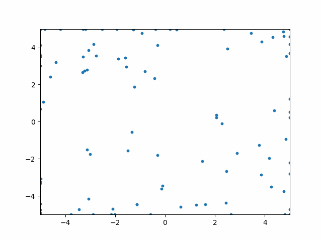

Python 粒子群算法理解
粒子群算法的核心是粒子，每个粒子都在不停地运动。这些粒子随机分布在解空间中，总有一些会离最优解比较进，这时其他的粒子就会逐渐向其靠拢，直到出现一个粒子更靠近最优解，这时所有的粒子便向新的粒子靠拢。
粒子
每一个粒子 都包含着下面的属性：
- 当前位置信息
- 当前粒子的速度信息
- 当前粒子的历史最优解位置
在算法运行时，还会用到一个全局的变量用于存储全局最优解的位置信息。而每一次迭代，粒子最核心的运算如下所示：
针对于不同的问题，可以尝试调整 等参数，就可以让函数更快地收敛。
下面的代码会生成下面的变化图象：

from matplotlib import pyplot as plt
import numpy as np
# 定义函数
def func(row):
x,y = row
# return x**2 + y -7*np.cos(np.pi*x) - 8*np.cos(2*np.pi*y)
return (x-2)**2 + y**2
def fitness(arr):
return np.apply_along_axis(func, axis=1, arr=arr)
# 位置矩阵
x = np.random.uniform(-5,5, (100,2))
# 速度矩阵
v = np.random.uniform(-5,5, (100,2))
# 适应度矩阵
f = fitness(x)
# 最合适的坐标索引
index = np.argmin(f)
fmin = f[index]
# 粒子最优解
pb = x.copy()
# 全局最优解
gb = [x[index][0],x[index][1]]
c1 = 0.4
c2 = 1
theta = 1
omega = 0.1
for j in range(50):
# 限制速度和粒子的活动范围
vNew = np.clip(omega*v + c1*np.random.uniform(-1,1)*(pb-x)+c2*np.random.uniform(-1,1)*(gb-x),-1,1 )
xNew = np.clip(x+theta*vNew, -5,5)
fNew = fitness(xNew)
indexNew = np.argmin(fNew)
fminNew = fNew[indexNew]
if fminNew < fmin: # 更新全局最优解
fmin = fminNew
gb = [xNew[indexNew][0],xNew[indexNew][1]]
for i in range(100): # 更新粒子的历史最优解
if f[i] > fNew[i]:
f[i] = fNew[i]
pb[i] = xNew[i]
x = xNew
v = vNew
print(f"=== 已迭代{j}次 ===")
if j % 1 == 0 :
plt.clf()
plt.scatter(x[:,0], x[:,1], s=10)
# 设置坐标轴范围
plt.xlim(-5, 5)
plt.ylim(-5, 5)
# 显示图像
plt.savefig(f"res{j:02d}.png")
import imageio
# 读取所有PNG图片并添加到列表中
images = []
for i in range(50):
filename = 'res{:02d}.png'.format(i)
images.append(imageio.imread(filename))
# 将所有PNG图片转换为GIF动画
imageio.mimsave('animation.gif', images, duration=1, loop=0)